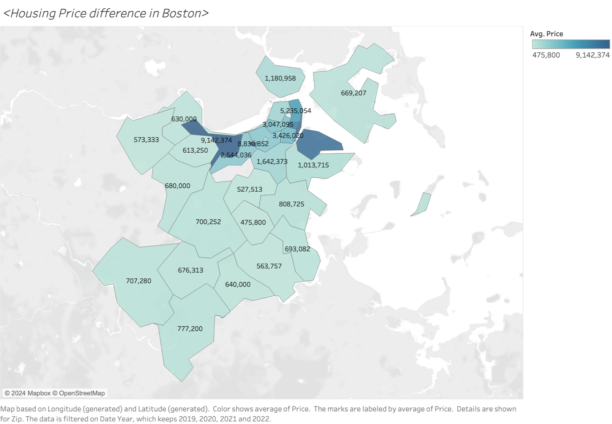
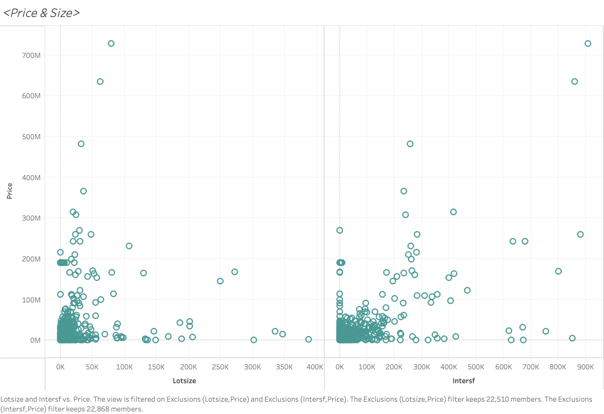
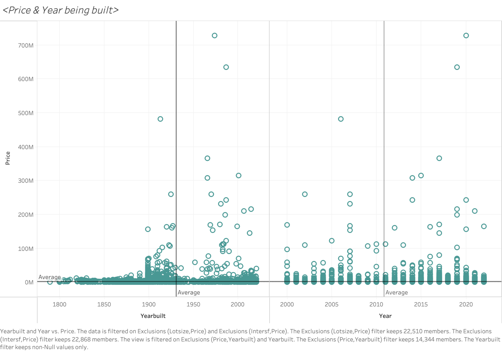

Subtheme: Residential Sales Analysis in Bosto(2000-2022)
Overall Analysis Questions
- What are the recent changes in the Boston Residential Sales market over the past few years?
- Analysis of speculative behavior in the Boston Residential Sales market (housing flips).
- What characteristics determine higher values for houses in Boston?
- ...
data cleaning
Before data analytics and data visualization, we cleaned the dataset including the steps as below:_ The zip code for 35 Queensberry St #1 is 02215, not 02251.
_ The zip code for 40 Battery St #PH4 is 02109, not 02209.
_ The zip code for 154 W Newtown St is 02118, not 02218.
_ The zip code for 483 Beacon St #74 is 02115, not 02214.
_ The zip code for 1140 Washington St #2F is 02124, not 02024.
Discoveries & Insights
Question1: Recent changes in the Boston Residential Sales market over the past few years
Our first step is to examine our data set. From the year 2000 to the end of 2022, the Boston residential sales market exhibited significant fluctuations, both in terms of the unit sale price and the total transaction volume, especially between 2016 and 2019. However, both aspects showed similar patterns of fluctuation until 2019, after which (especially by 2021) they began to exhibit different trends of fluctuation. Taking into account the context of COVID, we will mainly focus on exploring the changes in the Boston Residential Sales market between 2019 and 2022.

By setting the datedate as a filter criterion, we have visualized the changes in transaction volume and unit transaction price in the sales market from 2019 to 2022 through Tableau. Among these changes, the unit price has been on a decline, while transaction volume has increased due to the impact of price, which essentially still aligns with the supply and demand balance of the housing market. As for the decline in the unit price of home sales, a current subjective speculation is that it may be due to the impact of COVID-19 leading to economic downturn and a decrease in purchasing power for houses. However, more data is needed to predict causality.

By analyzing the transaction situation of housing types(proptype) over the past 4 years through Tableau, we can see that in terms of transaction volume, RCD-type houses have performed outstandingly, accounting for more than 85% of the total housing market transactions each year, with a total of 3,650 transactions over four years, while the transaction volume for other types of houses has generally remained within the double digits.
First of all, we filtered out RCD type houses and conducted further detailed studies on them through style subdivision. The upper half of Fig.4 shows the average sale price of different residential types, while the lower half displays the total sales revenue. As can be seen from the chart, different types of residences have different trends in price and sales revenue between 2019 to 2022. For example, the average sale price and total sales revenue of high-rise type houses show a downward trend over time; the decker type houses' average sale price and total sales revenue remain relatively stable; whereas the free-standing type houses' average sale price and total sales revenue show the opposite trend…
Faced with such varied trends, we could analyze and interpret them from two perspectives. As real estate merchants (investors), they might look for property types with potential for appreciation. In this chart, if a certain type of property shows a steady upward trend in average price, even though the total sales volume might decline, this could indicate that the market value of that property type is rising. Therefore, we would preliminarily recommend investment in Decker, Duplex, row-end, and semi-detached properties. (Though Townhouses also meet the criteria, it should be noted that they have significant price fluctuations, hence carrying a certain degree of risk.)
Conversely, as individual homebuyers, they usually consider price stability and affordability. Thus, we would recommend types that have a relatively lower average price or show a declining trend, which might indicate that these types of houses are currently more affordable. If the total sales volume also shows a declining trend, this could further suggest that there is an abundance of market supply, potentially giving buyers more room to negotiate. Combining this with this chart, we would preliminarily recommend high-rise and mid-rise to individual buyers, of course, further consideration should be given to individual usage needs.

Question2: Analysis of speculative behavior in the Boston Residential Sales market (housing flips).
By conducting preliminary analysis calculations using R, we analyze the profit value using (price_diff/price), and the median profit margin for flipping houses in Boston is approximately 21%. Next, we proceed with a timeline analysis: we first use flip_ind = 1 as a filter condition, and analyze the number of transactions identified as house flipping on Boston's housing transaction market over the past 20 years (from 2000-2022) in the form of a timeline chart. It is evident that the volume of house-flipping transactions was in the single digits from 2000 to 2010 (part of reasons may due to insufficient data collection). Starting from 2011, the volume of transactions aimed at house flipping began to increase significantly, reaching a peak in 2016 (with a transaction volume of 60); whereas in the subsequent six years, it continued to fluctuate and decline. Therefore, our further analysis will focus on the years 2011 to 2022 going forward.
This chart shows the relationship between the length of the trading cycle (long-term, mid-term, and short-term) and the change in transaction prices within Boston's house flipping activities. It indicates that the duration of the trading cycle indeed affects the price changes in property transactions, especially as long-term and short-term trading cycles are more likely to experience extreme price fluctuations. However, the majority of transactions exhibit relatively small changes in price, with the median close to zero. This may suggest that in the Boston market, unless one can capitalize on specific market opportunities, predicting price changes based solely on the duration of the trading cycle may not be sufficient to generate significant profits.

This chart shows how different types of properties influence the profit margins (difference between initial and final transaction prices) in Boston's house flipping market. It concludes that property type significantly impacts flipping profits, with types like APT, COM, and R1F displaying high profit potential, whereas RCD types offer limited profit margins. Overall, while some properties exhibit high profitability, the majority show modest gains, and the risks of flipping vary markedly by property type. Investors should consider these factors and assess market dynamics and risks accordingly.

Lastly, we would like to address one final question regarding the house flipping market: Who is engaged in flipping houses? We defined new variables (buyer_category & seller_category) using the R language, classifying entities from LLC/INC/CORP/CO/INC as corporate-type buyers; trust/bank as the second category of buyers; and fannie mae/freddie mac/government entity as the third category (government) of buyers. According to statistics, about 38.1% of buyers belong to the corporate category, 61.6% of buyers are classified as trust/bank, with the remaining 0.2% of buyers coming from government agencies. Similarly, we categorized and integrated sellers, and statistics show that approximately 41.3% of sellers belong to the corporate category, 58.3% of sellers come from trust/bank, with the remaining 0.4% coming from government agencies.
Question3: What characteristics determine higher values for houses in Boston?
This map illustrates the average housing prices in different areas of Boston. The color gradient represents a range of average prices, with the darker tones indicating higher prices and lighter tones indicating lower prices. Specific average prices are annotated on each area, highlighting considerable variability across the city. The highest average price observed is $9,142,374, which significantly contrasts with the lower end of the spectrum at $475,800. Such disparities suggest a diverse housing market, with certain areas being markedly more expensive than others, potentially reflecting varying neighborhood desirability, local amenities, and housing characteristics.
The scatter plot displays the relationship between housing prices and two size metrics: lot size and interior square footage (labeled as 'Lotsize' and 'Intersf' respectively). For lot size, the data points are heavily clustered at lower price points and smaller lot sizes, with a few outliers exhibiting high prices for larger lots. In contrast, interior square footage shows a more pronounced positive correlation with price; as the interior size increases, there's a noticeable trend towards higher prices. This suggests that while larger lot sizes do not consistently equate to higher prices, the interior square footage is a more reliable predictor of a house's price, with larger homes generally commanding higher prices in the market.
This scatter plot depicts the relationship between the year buildings were constructed and their respective prices in Boston. The data suggests that the "year a residence was built" may precede the "year a building was built," likely due to most properties undergoing renovation or reconstruction at their original sites. Post-2000, there is a noticeable increase in the number of buildings constructed, with a relatively concentrated price distribution that averages lower. However, there are exceptional cases of very high prices for buildings constructed in both earlier and more recent years, indicating that the age or renovation status of a building influences its price but is not the sole determinant. Boston's property prices are also affected by a combination of factors such as location, historical value, and market trends. In summary, there is no clear linear correlation between the construction year and house prices, suggesting that a property's value is more significantly impacted by other aspects like location quality, property condition, and market supply and demand.
Summary
The analysis is structured around three main questions: recent market changes, speculative behavior (housing flips), and determinants of housing values. The report highlights significant fluctuations in the Boston residential sales market, especially between 2016 and 2019, with a distinct divergence in trends post-2019, possibly due to COVID-19 impacts. The decline in unit prices and increase in transaction volumes post-2019 suggest a shift in market dynamics. Detailed analysis indicates the dominant role of RCD-type houses in transaction volumes and varied trends across different housing types, suggesting investment opportunities in properties like Decker, Duplex, row-end, and semi-detached houses.
Speculative behavior, analyzed through house flipping activities, shows a peak in flipping transactions in 2016 with a profit margin median of 21%, indicating significant involvement by corporate and trust/bank entities. Factors influencing flipping profits include the property type and duration of the trading cycle, with certain property types like APT, COM, and R1F showing higher profit potentials.
Furthermore, the report delves into characteristics determining higher house values in Boston, identifying location, housing size (interior square footage more so than lot size), and the year of construction as key factors. The analysis reveals a diverse housing market with significant price disparities across different areas, a positive correlation between interior size and price, and a nuanced impact of construction year on property values.
Reflection
1. Before processing the data, it is crucial to understand the meaning represented by each data variable and to correct any invalid or erroneous data. This often requires a kind of intuition—anticipating common mistakes. Facing this dataset, there are many data points I still cannot fully comprehend (some differ from my normal expectations, some definitions are not clear enough, such as the corresponding relationships and differences between usecode, proptype, and style). This indicates that if one is collecting data, it is necessary to provide more detailed and comparative definitions in the dictionary.
2. When completing this assignment, I often faced difficulties in choosing the method of visualization. Sometimes I believe that simple histograms could most directly present the analysis results, but this would reduce the overall appeal of the report. Also, it's important to avoid my subjective judgment leading to biased analyses. For instance, I previously assumed that older building years would lead to a decrease in price, but the scatter distribution of the data shows that there isn't such a direct correlation.